14 Humans as prey
Our species no longer suffers large predators as so many species do (Figure 13.1). But dangerous predators remain part of the human condition. We call them diseases. By analogy, think of visible organisms living in a pond—from birds, fish, frogs, insects, and plankton to aquatic plants (Figure 14.1, left). To be successful across a region, the organisms must gain resources in the pond while competing with other species, survive predators, and enable their offspring to disperse to another pond. To be successful they must not destroy the pond in which they live, at least until they or their offspring have dispersed to another pond.
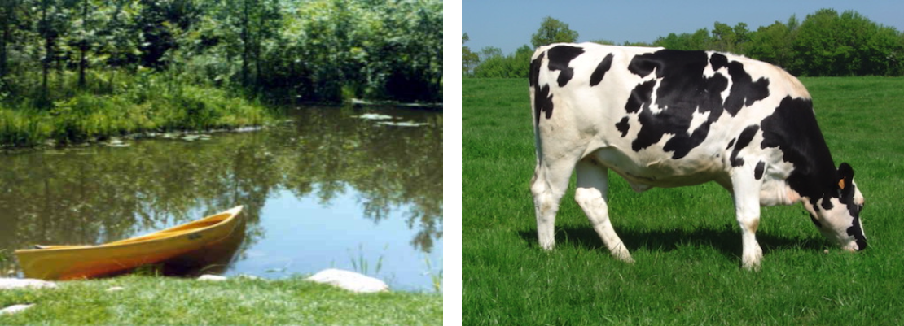
What is the body of a plant or animal to an infectious virus or bacterium? It is like a pond. There may be other pathogens in the body competing for its metabolic resources. There are predators in the body in the form of an immune system. And to be successful the pathogen must disperse to another body without destroying the body in which it lives, at least until it or its offspring has orchestrated a way to disperse into and colonize another body.
14.1 Portals
A pond has entry and exit portals. If an organism is small enough, it can exit a pond on wind and spray. Some organisms can float downstream to another pond, while birds and insects can simply fly. Larger organisms such as amphibians can hop or walk from pond to pond to lay eggs. And a new exit portal has recently appeared in the form of boats and trailers that carry invasive weeds and animals from one pond and deposit them in another.
Think analogously of the entry and exit portals of an animal (Table 14.1). How can pathogens leave one body and enter another? While skin covers at most two square meters in humans, mucus membranes of the respiratory, digestive, and reproductive tracts cover more than 400 square meters. So, mucus membranes become good portals.
Successful diseases can exploit obligate behaviors. Animals, for example, must breathe continually, so exploiting the respiratory pathway—being breathed out into the air by one animal and breathed in by another—is a reliable and ever-present method of transmission.
| Portals of exit | Portals of entry |
|---|---|
| Breath | Blood (cuts, wounds, insects, needles) |
| Droplets (sneezing, coughing) | Lungs |
| Saliva | Nose |
| Sweat | Eyes (conjunctiva) |
| Tears | Mouth (mucosa) |
| Feces | Mouth (tooth/gingival junction) |
| Urine | Gut |
| Seminal fluids | Skin (scabs, triconosis, warts, etc.) |
| Vaginal fluids | Urinary tract |
| Blisters, boils, zits (via scratching, breaking the skin) | Rectum |
| Blood (mosquitoes, ticks, hemorrhage) | Vagina (mucosa) |
| Penis (mucosa) |
Animals must also eat frequently and periodically, so exploiting the oral pathway—leaving through urine and feces and getting back through the alimentary canal—is another reliable path, at least under conditions in the wild or with animals that live on and eat grass (Figure 14.1, right).
Animals must reproduce, so exploiting the genital pathway—where many animals come into direct bodily contact—is a third reliable path. This can be especially productive, as mucosal tissues of high surface area are touching and infected fluids can be transferred from one sex to another. A pathogen that can get into seminal fluid of a mammal, for example, has a direct path for transmission.
Finally, many animals care for young, so exploiting parental care can be a fourth reliable path. A pathogen that can enter a mother’s milk has a direct path for infecting her offspring. Such transmission from parent to offspring is called “vertical transmission,” with other forms called “horizontal transmission.”
14.2 Pathogen mobility
While microscopic pathogens are not independently mobile, their hosts are, and pathogens have evolved ingenious ways of modifying the behavior of a host to enable their transferal to another host.
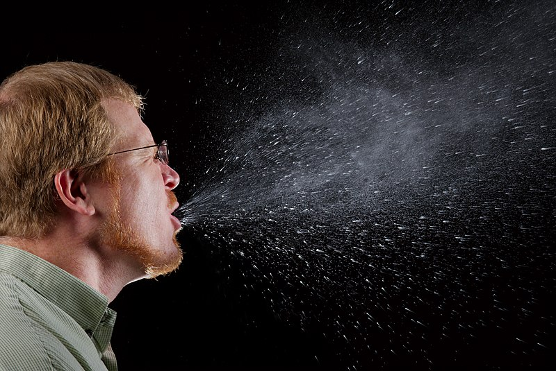
Sneezing and coughing reflexes, for instance, are ancient responses for clearing obstructions from the nose and throat, and some pathogens deceptively induce those responses for a pathway out (Figure 14.2).
What we call “symptoms of disease” are not, then, random effects of a disease, but can often be a pathogen’s way of getting out of one pond, so to speak, and into another. Any of the pathways of Table 14.1 can be exploited by a pathogen, which in doing so may upset these pathways and cause the host great distress.
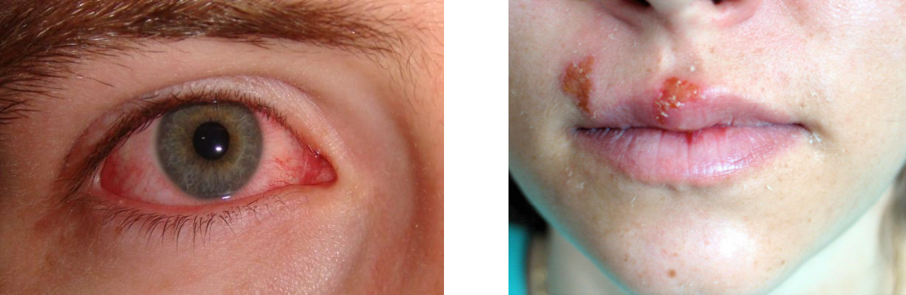
Some pathogens, for example, get into your eyes and tears and deceptively cause itching and soreness (Figure 14.3, left), inducing you to rub your eyes and transfer the pathogens to your fingers. This in turn can successfully move them to other locations like food, from which they can enter another host by the oral pathway.
Other pathogens are able to break the skin and get out of the body on their own. Cold sores (Figure 14.3, right), a form of oral herpes, form around the mouth and nose, transmitting to what touches the sore. A related genital herpes is transmitted sexually, though evolution has been proceeding and the genital form is now able to infect orally and the oral form genitally. This and other sexually transmitted diseases have been increasing since about the middle of the twentieth century.
One of the most successful pathogens to use the lungs and skin as pathways out of the body is smallpox (Figure 14.4). It leaves its host with permanent scars, often over the entire body. Smallpox is an ancient disease, dating from the time before the pyramids, that can kill a majority of those it infects and at times can infect a majority of the population.
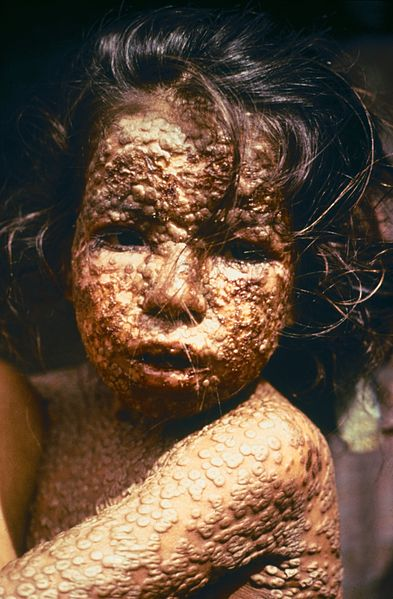
The very success and horror of smallpox was part of its ultimate destruction—its eradication was the first complete victory in the conquest of disease. Thanks to prolonged diligent attention throughout the world, and of course to the invention of vaccine, smallpox has been made extinct in the natural world. (We say “natural world” because laboratory samples are being retained.)
William Foege, a key player in orchestrating the extinction of smallpox, said that we can conquer disease because we evolve so much more rapidly than the disease.
This may be startling to hear, given that our physiological evolution is much slower than that of viruses or bacteria. But, he explained, because we evolve socially much more rapidly than a disease can evolve biologically, we are able to “outsmart” the disease.
Rinderpest, a viral disease causing high rates of mortality in cattle and wild mammals, was the second disease declared extinct in the natural world. Others—such as polio and Guinea-worm disease—may soon follow, though the latter may simply be eradicated from human populations by our continual isolation from sources of infection.
Diseases can exploit blood-sucking parasites to move directly from the blood stream of one host to that of another. Lyme disease (Figure 14.5, left), for example, is spread by ticks, which puncture the skin to obtain a blood meal for themselves but in the process can transfer pathogens. And Ebola (Figure 14.5, right) leaves by almost every exit portal listed in Table 14.1, destroying those portals by carrying not just the pathogen but chunks of lung, intestine, or skin in the process.
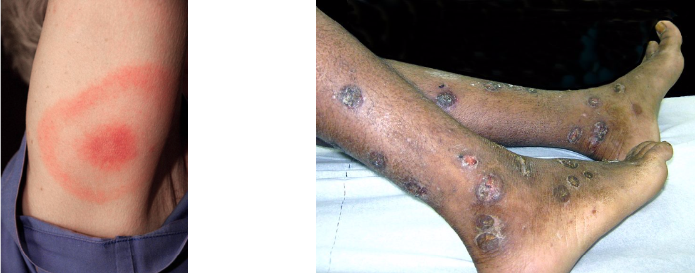
Human populations are so large and dense that even relatively inefficient pathogens can be successful. And diseases, of course, also affect wild and domestic animals as well as crops and other plants.
As Chapter 15 illustrates, many diseases can evolve to be relatively harmless to their hosts, promoting transmission and allowing the disease to become widespread. Rust fungus infections, for example, are common in many plant species, but seldom lead to the death of the host. Powder mildew on the prairie plant Monarda fistulosa is so widespread that it is used in plant identification books as a way to identify the species (Figure 14.6, right).
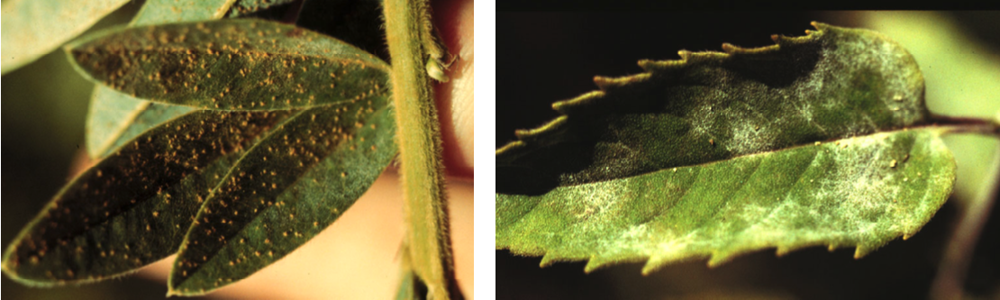
Pathogens can dramatically alter animal behavior. Rabies first gets through the salivary glands and into the saliva of an infected host. Physiological changes then make the host animal salivate profusely—foaming at the mouth—while psychological changes make it appear crazy and angry. The animal then bites through the skin of another animal, transferring the pathogen to that animal’s bloodstream, and the cycle continues. Both the physiological and psychological changes are caused by the pathogen and allow it to spread, even after the death of the initial host.
“Mad dog behavior” is thus not an accidental consequence of the disease, but precisely the means the pathogen has developed for getting, so to speak, from pond to pond.
It is useful to try to think of all the ways a pathogen might alter the behavior of its host to force the host to transfer the pathogen. This is not just an intellectual exercise, but could help identify potential for new emerging diseases. For example, what should a sexually transmitted disease do to its host in order to spread faster? It should render its host more active sexually! And indeed this happens. Female chimpanzees would normally mate only every two years or so, after having given birth and nursed their young to the point of weaning. But female chimps infected with SIV (simian immunodeficiency virus) reach estrus every month or so, and do not conceive. The pathogen changes their mating behavior to spread itself more than an order of magnitude faster than it would otherwise spread.
Inspired to think in this way, one student came up with a novel idea: Imagine a disease that can escape through the sweat glands without harming its host. As behavioral modification, it makes infected hosts want to undergo strenuous exercise in groups, such as in gymnasiums—thus explaining the entire modern exercise phenomenon as a disease! (Gerbils may also harbor this disease.)
14.3 Disease more generally
The tiniest predators—infection and disease—differ from what are usually thought of as predators in a number of ways, some of which you have seen. First, the disease organism is much smaller than its victim and not independently mobile. It must be carried by wind or water, or induce its host to transfer it in one of numerous ways.
Second, disease does not necessarily kill its victims. Many diseases, in fact, leave their victims largely intact, the better to transmit the pathogen to another host. And third, after infection, the prey may become forever immune to future infections, both by that pathogen and related ones. This immunity is created by the enormously elaborate “immune system” of vertebrates and other animals— a system recognizing and killing incoming pathogens before they can incubate and do much harm, and as elaborate and complex as the brain and central nervous system.
One of the great discoveries of the last millennium was that the immune system could be primed to recognize a pathogen before it invaded, though what was happening inside the body was not understood until the twentieth century. Vaccination played a central role in the eradication of smallpox. The twentieth century also saw the discovery of antibiotics such as penicillin, which allow doctors to cure disease after an infection has progressed.
These discoveries show us that humans must be considered separately from plants and other animals, for we have developed special powers against disease. We are not passive prey, and do not simply suffer a disease or make behavioral modifications to avoid it. Instead we actively and globally strive to destroy disease, or subdue it. And we extend these efforts to diseases affecting the animals and plants we depend on.
With respect to disease, plants have distinct properties that are in direct contrast with those of animals. Animals, in general, are high-energy organisms—metabolizing rapidly, moving about, and perpetually pumping oxygen throughout the body. Plants are nothing like this. Rather than hearts and rapid fluid flow to distribute food and oxygen and to cleanse waste materials, plants use the passive effects of capillary action and evaporation. This requires the tiniest of veins, or capillary action will fail. And these veins are too small to transport plant cells, or to allow larger pathogens like protozoa and many bacteria to gain access to the entire organism. This also means that plants cannot have the same kind of immune system as animals, with their own cells travelling through their tissues on patrol.
In addition, plants are typically modular. An infected part—leaf, flower, or whole limb—can be discarded and grown again. The apical meristem cells at the tips of branches and roots are capable of developing entirely new plants. While cancer cells can spread through the body of an animal and kill it, such cells would simply plug the veins of plants. So while animals get cancer, plants get cankers. Plants have longevity, while animals have mortality—the cost of being a high-energy organism.
14.4 The strange case of polio
Polio had long been a relatively rare disease of infants, called “infantile paralysis.” In the middle of the twentieth century, however, it became more common and started affecting older children and adults. A new form of the disease seemed to be emerging.
Which of these people, do you think, performed the greatest service to human health and hygiene in the twentieth century, but inadvertently triggered this mid-century Polio epidemic? (a) Louis Pasteur, discoverer of pasteurization, (b) Alexander Fleming, discoverer of penicillin, (c) Jonas Salk, creator of the polio vaccine, (d) Franklin Delano Roosevelt, President of the United States and polio victim, or (e) Henry Ford, creator of the production line.
This seems a strange question, with industrialist Henry Ford under consideration. But indeed, the answer is Henry Ford! At the beginning of the twentieth century, most local transportation was by horse and powered, of course, almost entirely by the biofuel hay. While it has now largely left social memory, in the early decades of the twentieth century the streets were a slurry of gravel and horse manure. Flies were everywhere, and caused little concern, for this was the norm. People’s outhouses were ventilated to the open air, and flies laid eggs there and in the streets, then freely entered houses and landed on food. A number of diseases take advantage of the fecal–oral pathway, and polio is one of them. But automobiles and tractors intervened.
As the horsedrawn era closed, manure generally vanished, running water arrived and flush toilets arrived, hygiene improved, sealed screen doors became common, and flies died in vast numbers. Without intending it, Henry Ford became the greatest fly killer of all time. The availability of the fecal–oral pathway diminished, and the infectivity of related diseases fell.
Figure 14.7 shows the horse population declining slowly until World War I, then falling rather steadily as the number of cars increased in stages. The first increase in the number of cars ended around 1930 with the Great Depression, when many people could not afford cars. The end of World War II in 1945 brought another boom in car purchases, and by 1975 society had replaced almost every horse per capita with a car.
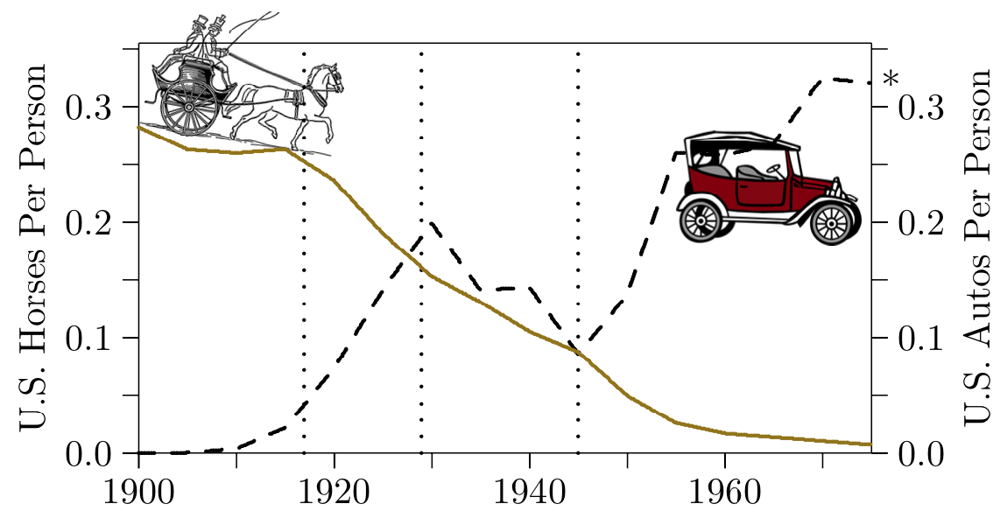
As the chance of catching polio fell, the average age of catching it increased. To understand this, consider residents of the northern hemisphere living at various latitudes. Because residents of the High Arctic have a chance to see the northern lights—the aurora borealis—every week, children living there will likely see the aurora before their first birthday. Farther south, at 50 degrees north latitude, the aurora may appear only once every few years, especially near the lights of cities, so a child could be 5 or 10 years old before ever seeing it. And finally, say at 35 degrees north latitude, the aurora may appear but once or twice in a lifetime, so many people could be in middle age before viewing them, and others might go an entire lifetime without being touched by their hypnotic display.
So it is with disease. The number of opportunities for catching a highly infectious disease, naturally, is high. If the quantity of pathogens in the environment is such that all individuals encounter them on average once a year, only about one-third of infants will avoid infection in their first year. (Actually the number is \(\frac{1}{e} = 0.367...\), if the chance of infection is completely random.) The same fraction of the remaining infants will catch the disease during their first year, and the rest will be age two or older when they catch the disease. Therefore, as the pathways for transmitting polio diminished during the twentieth century, the chances of catching it in any year decreased and the age of onset correspondingly increased.
Polio is like some other diseases that are not usually virulent in infants and young children. A baby infected with polio might have a cold and a runny nose, and the infection might go without particular notice. In an older child, however, it can stop bone growth and muscle development, crippling the child. The polio epidemic of mid-century America was thus not a new disease emerging, but an ancient disease dying out.
Albert Sabin, of polio vaccine fame, suspected a connection with flies. In 1941 he and his colleagues reported in Science on a study they performed in areas of the United States where polio had struck. They captured flies, pureed them in sterile fluid, and gave them to monkeys in feedings, nosedrops, or injections. As they put it, “Down came the monkeys with polio.”
With further improvements in hygiene and broad use of vaccines, rates of polio have dropped to nearly zero. Figure 14.8 shows a moderate number of cases of polio before the late 1940s, an outbreak lasting until the early 1960s, and nearly nothing in the years following.
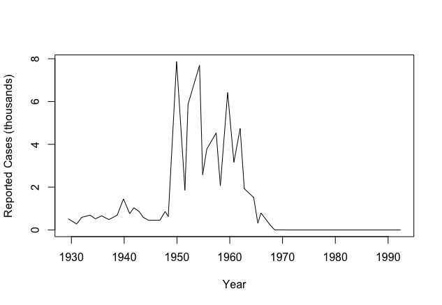
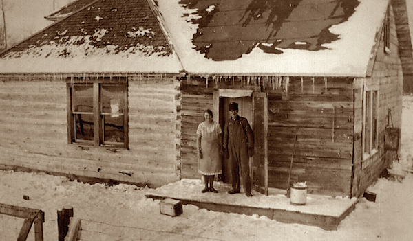
14.5 Modern disease trends
Many ordinary diseases have been subdued since the last half of the twentieth century, some to the point of extinction from the natural world. Smallpox and rinderpest are gone, and polio nearly so—as we are writing this (2016–17), polio workers are anticipating its extinction in the foreseeable future. Diphtheria is on a similar path (Figure 14.10), with only a handful of cases in the United States during the twenty-first century.
Diseases such as whooping cough and measles (Figure 14.10) have been subdued but remain with us, with some cycling through periodic outbreaks. The rates of many ordinary diseases are being reduced, and infectious disease is no longer the major cause of deaths in human populations.
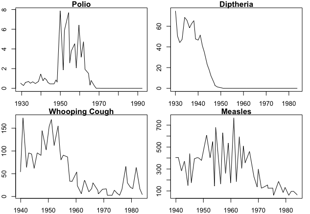
Rates of various sexually transmitted diseases, however, are on a different course (Figure 14.11). Gonorrhea rates have declined but remain considerably above zero, and it is a commonly reported disease in the United States. The appearance of syphilis appears to be cyclic, as rates had declined but are now rising again. Rates of chlamydia—which can lead to serious outcomes, including infertility in women—have been increasing steadily, without an end in sight, and rates of genital herpes and other sexually transmitted diseases are rising similarly. Sexually transmitted diseases are a prominent problem to be solved in the twenty-first century.
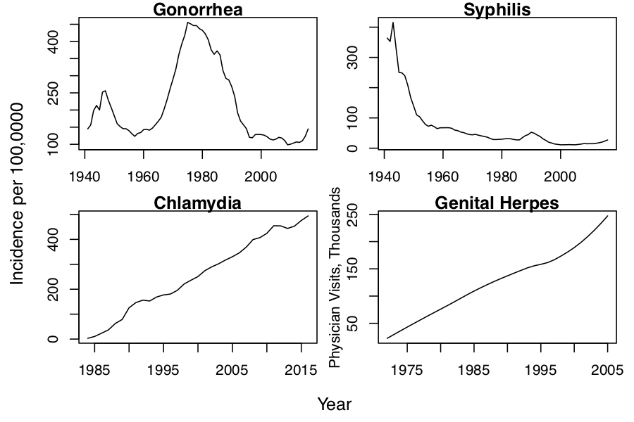
14.6 An ancient plague perhaps vanishing
We close this chapter with a graph to ponder. Examine Figure 14.12, an epidemiological view of annual deaths per 1000 population during the twentieth century, from a widespread and ancient cause. Imagine what it represents. Is it a sexually transmitted disease, an ordinary disease with an effective treatment introduced around 1946, or something else entirely?
The solid blue regression line goes through the average number of deaths over time from 1946 forward, projected back on the dashed line through the outbreaks earlier in the century.
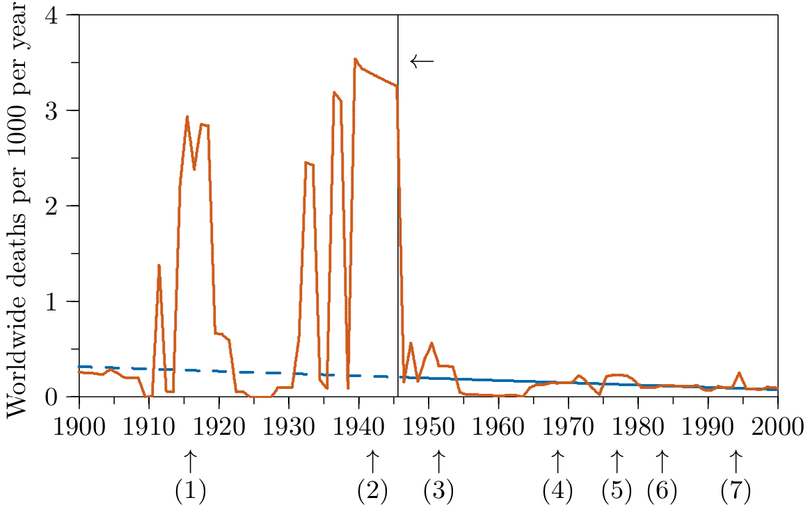
Figure 14.12 is actually an epidemiological view of deaths from warfare, which have been declining per capita over the past 70 years. The vertical line marks the beginning of the atomic era, and the numbers in parenthesis indicate (1) World War I, (2) World War II, (3) Korea, (4) Vietnam, (5) Cambodia and Ethiopia, (6) USSR–Afghanistan and Iran–Iraq, and (7) Rwanda.
Why include a chart of war deaths in a book on ecology, and in a chapter on the ecology of disease? First, war is directly connected with ecology and the environment. Throughout human history, warfare has been caused by environmental change, as existing territories became unproductive and new territories were sought, and in turn it has caused environmental change through habitat alteration and other forces. Second, humans are a dominant ecological force, whose impact we examine in this book, and warfare has been a prominent theme in the human condition. And third, warfare has some of the properties of a disease. It can spread from places of origin like a disease, and has analogs of competitors and mutualists in addition to obvious roles of predators and prey. Moreover, it involves an infectious agent—replicating not as biological agents spread between bodies of their hosts, but abstractly, like ideas—as seen by Richard Dawkins—replicate as memes between minds of their hosts.
Warfare has enough abstract similarities to biological agents, and enough tangible effects on ecology of the planet, that we want to offer these ideas for your future consideration, and with the hope that some progress can be made by enough minds examining them.
From discussions with students and colleagues thus far, and from parts of the literature, here are some thoughts for your consideration.
- Nuclear weapons. It seems indisputable that these caused an initial collapse of warfare, but they may also have affected the number of war deaths during the rest of the century. Of course, they could also have led to unprecedented numbers of deaths had political arrangements worked out differently.
- Immediate journalism. Photographic news coverage becoming ever more immediate gave the world a different view of war. Cell-phone cameras, social networks, and the internet expand that indefinitely today.
- International law. Most international law may not yet be written, but we have seen its beginnings. How much has the encoding of war crimes since World War II contributed to the decline?
- Self-government. The rapid expansion of self-government since the middle of the twentieth century may have contributed to the decline in war-related deaths, as self-governing nations tend to avoid war with other self-governing nations.
- International trade. In the same way, nations that trade mutualistically may also tend to avoid war so as to avoid destroying trading partnerships.
- Expanding ethics. At the end of 1957 the Soviets launched the space dog “Little Curly” into orbit, intending him to die while orbiting our planet. Though this went largely unchallenged in the twentieth century, would any nation be able to do something like this in the twenty-first? Do expanding ethics in other realms contribute at all to the decline in war deaths?
- Women in power. It is worth considering whether the increasing proportion of women in government has an effect on the number of war-related deaths. Among primates such as chimpanzees and baboons, males are the more aggressive sex. If this is true in humans, might it have continued effects in the future?
- Improved medicine. Serious wounds once meant infection and death, but now victims can recover. And mortality from diseases which can spread rapidly in wartime—like influenza—has been reduced. The same level of warfare now manifests fewer deaths, making part of the decline an artifact.
- Reduced overkill. The percentage of a population killed during a war decreased from nearly 100% in some ancient times to “what is necessary” in more recent cases. Has the development of precision weaponry contributed to continuing decrease in war deaths? This would also make part of the decline an artifact.
Humanity has already unexpectedly broken the millennia-long rush of ever-accelerating population levels (Figure 6.3). Could something similar be happening with the millennia-long scourge of war? According to projections along the regression line, and for whatever the reasons, if the trends of Figure 14.12 are real and can be understood and continued, humanity may be on a path toward the elimination of background warfare, even before the end of this century.
This material is a partial encapsulation of Steven Pinker’s 800-page book, “The Better Angels of our Nature” (2011). That downward slope indicates a plausible goal to understand and a plausible hope to maintain. It is plausible, but we cannot know if it is practical without dedicating ourselves to it.
There is a level of self-fulfillment in such things, for if we collectively do not believe a goal like this can be achieved, it likely will not, but if we believe in it and work toward it, we might succeed. Along present trends, you can work with reasonable, rational, data-based hope to make background warfare vanish in your lifetime. And regardless of the outcome, all will be ennobled by the effort.